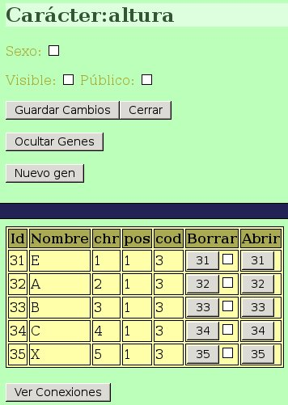
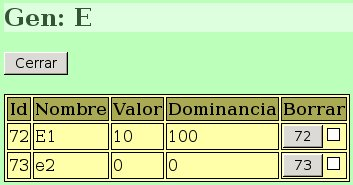
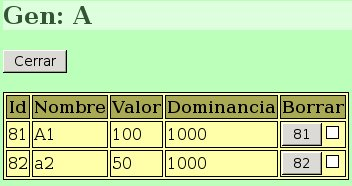
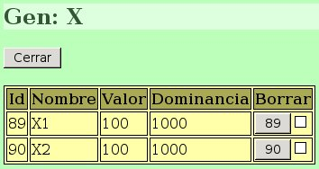
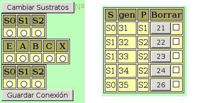

Pueto que ya sabemos crear nuevos caracteres en GenWeb, no será necesario repetir todos los pasos básicos de nuevo. Simplmente creamos un nuevo gen llamado “altura”, lo abrimos, y añadimos los siguientes genes:

En este paso lo único relevante es dar a cada gen su nombre, según nuestro diseño, y colocarlos en cromosomas diferentes de modo que presenten segregación independiente.
Una vez creados los genes debemos añadir los alelos correspondoentes a cada uno de ellos. Abrimos el gen E y añadimos los dos alelos correspondientes:

Vemos que, de acuerdo con el diseño, hemos asignado una valor 10 a E1 y 0 a e2. Para que haya una dominancia completa, el valor de dominancia es respectivamente, 100 y 0.
Para el caso de los genes A, B y C, añadiremos en los trres casos alelos similares, como los del ejemplo del gen A:

Para conseguir que un gen tenga efecto aditivo en GenWeb, se asigna un valor de dominancia de 1000 a todos los alelos que queremos que sean acumulativos.
Por último nos falta añadir los alelos el gen X:

Ambos alelos tienen el mismo valor y presentan efecto acumulativo.
para que estos genes interaccionen de la forma en que los hemos diseñado, deberemos conectarlos correctamente:

Vemos que se han creado tres sustratos, y la forma en que se han realizado las conexiones. Las Id de cada gen pueden comprobarse en la tabla de genes.